Publications
2025
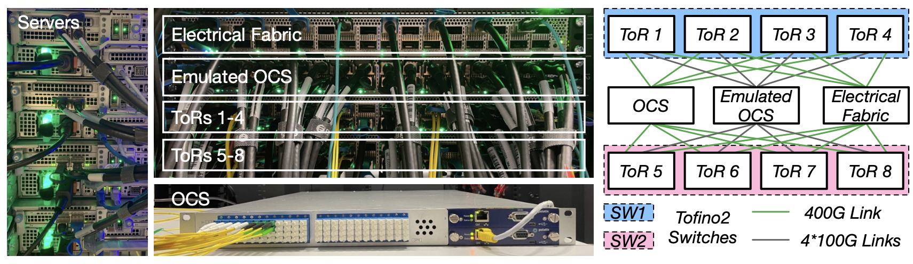
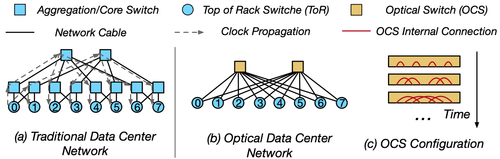
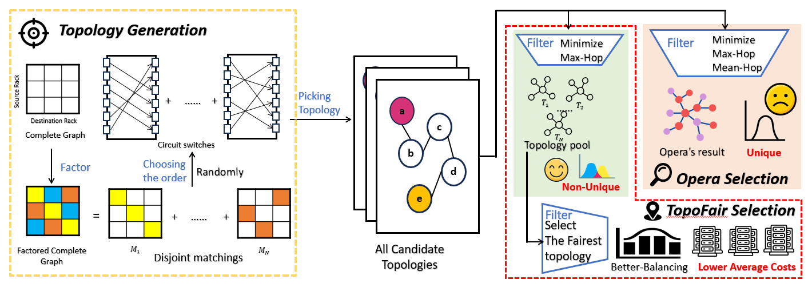
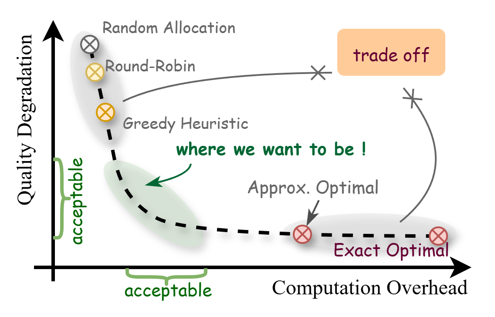
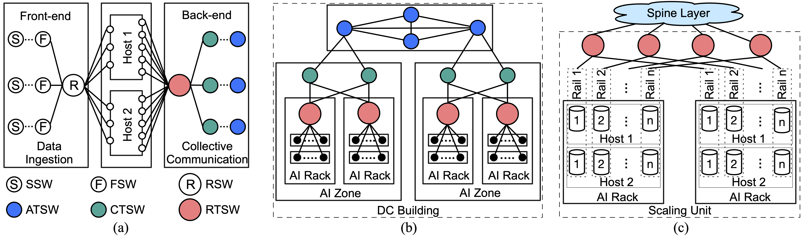
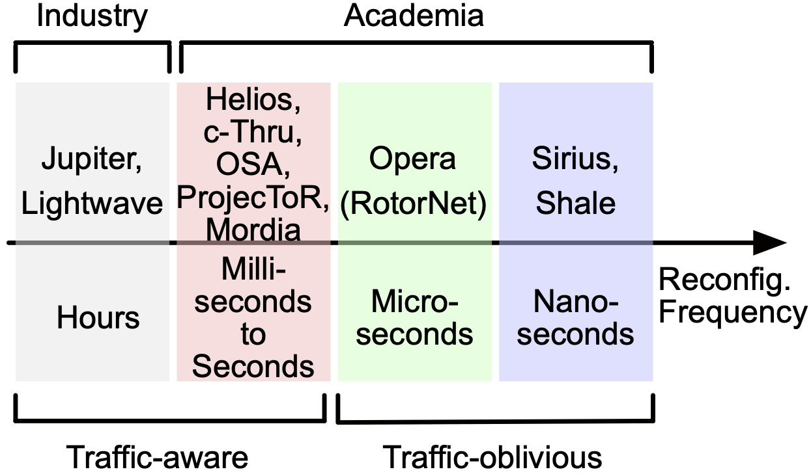
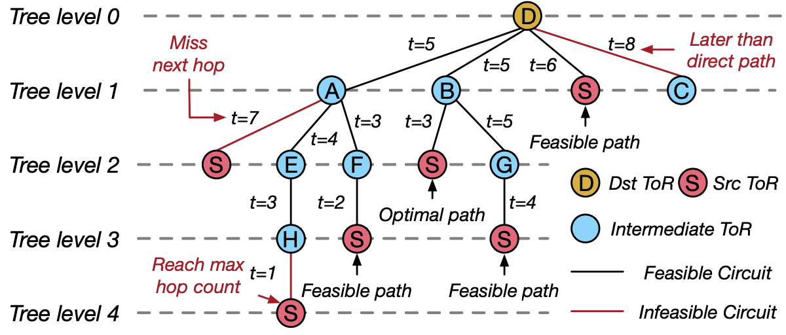
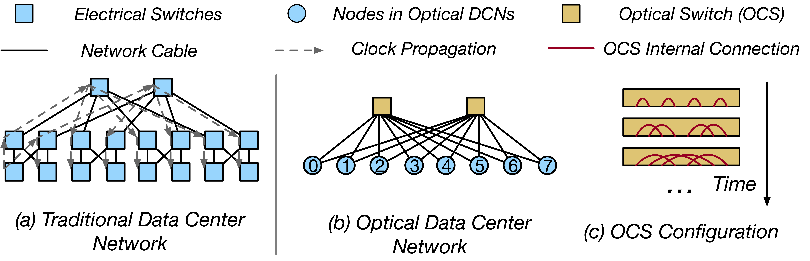
2024


2022


2021

2020


2019


Provisioning Short-Term Traffic Fluctuations in Elastic Optical Networks
IEEE/ACM Transactions on Networking (ToN), vol. 27, no. 4, pp. 1460-1473, Aug. 2019

Time-Sliced Flexible Resource Allocation for Optical Low Earth Orbit Satellite Networks
IEEE Access, vol. 7, pp. 56753-56759, 2019.

2018


2017

Balancing Energy Efficiency and Device Lifetime in TWDM-PON under Traffic Fluctuations
IEEE Communications Letters, vol. 27, no. 9, pp. 1981-1984, 2017

Preprints
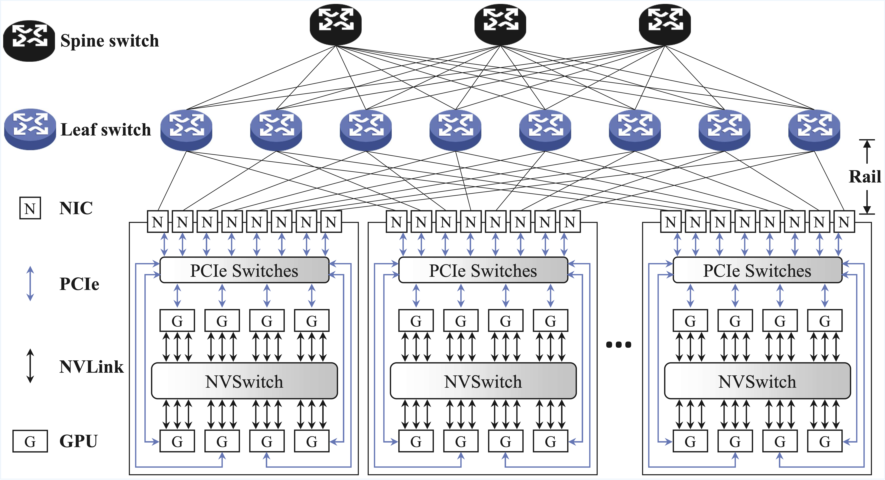
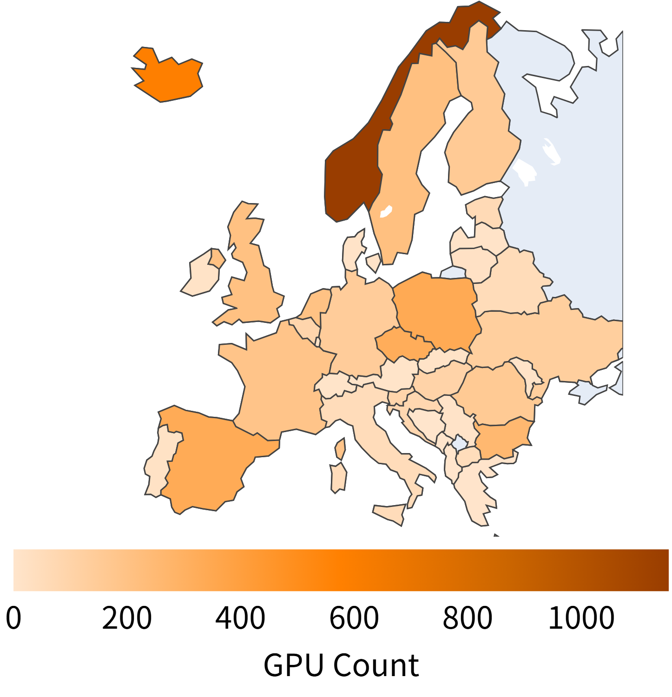

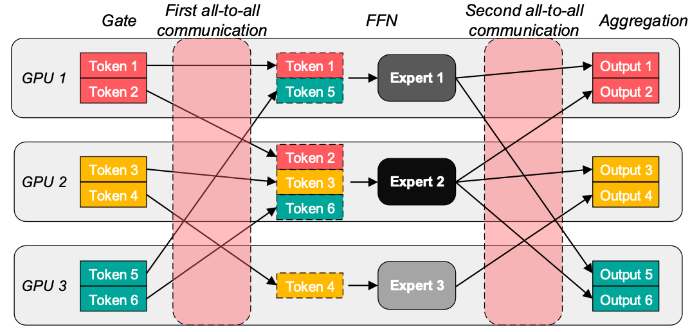